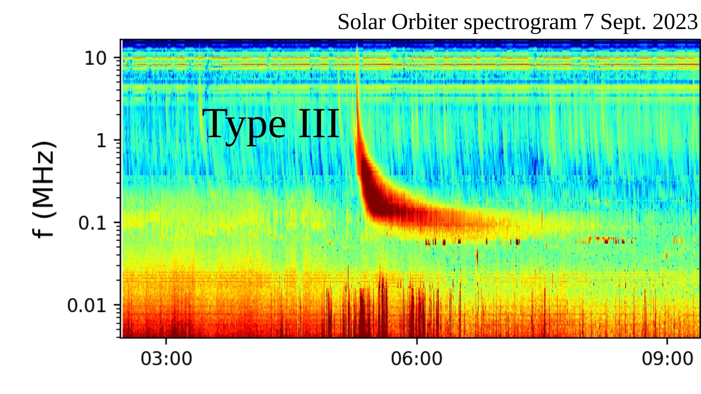
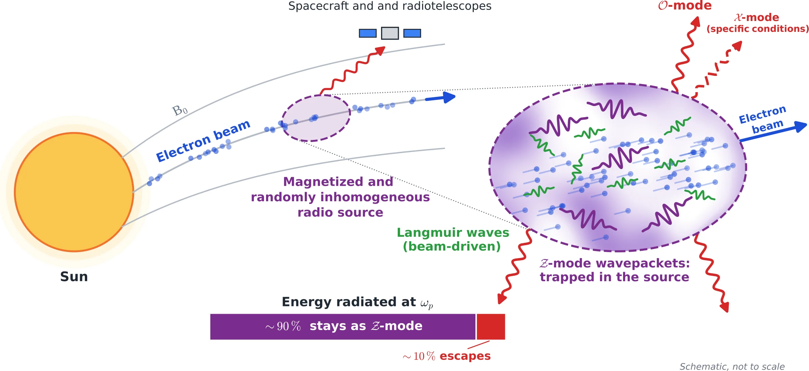
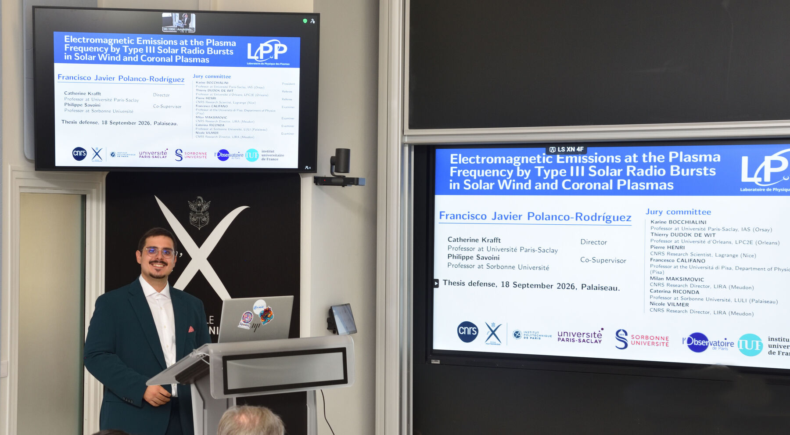
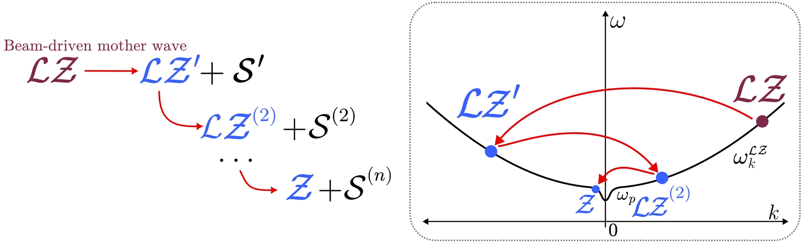
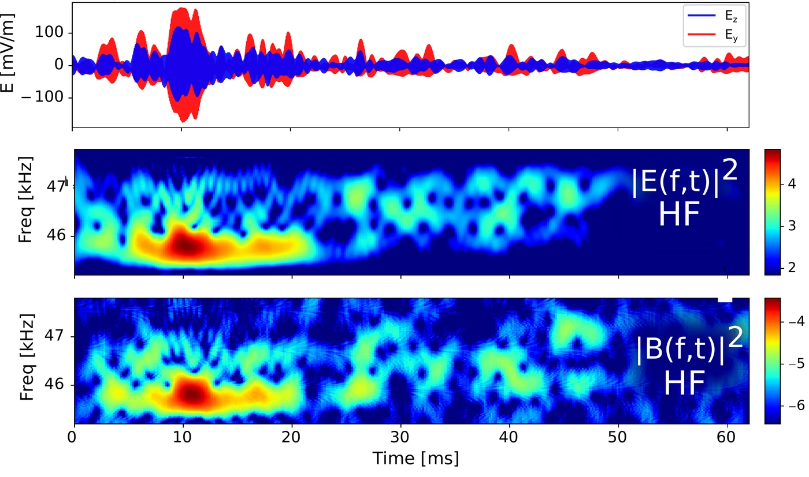
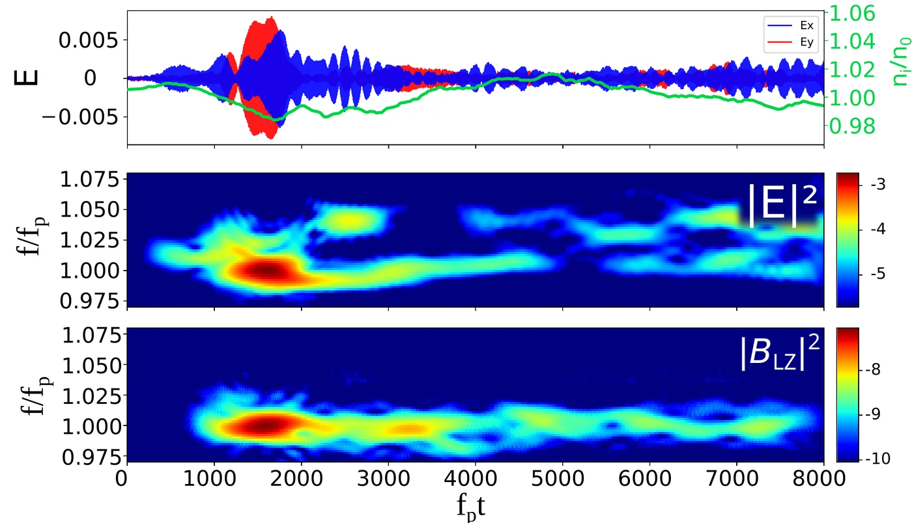
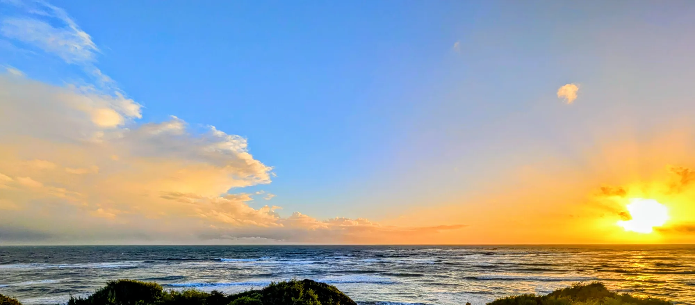

A new radio emission process
In a magnetized plasma the last step of the electrostatic decay cascade radiates electromagnetic 𝒵-mode waves. Found in simulations, then observed in situ by Solar Orbiter.
Plasma physicist
Postdoctoral researcher (ATER), Laboratoire de Physique des Plasmas, École Polytechnique
I study how electron beams from solar flares generate plasma waves, and how these are converted into radio emission.
Type III solar radio bursts, Langmuir wave turbulence and plasma emission, approached with large-scale kinetic simulations, theory and Solar Orbiter observations.
Type III solar radio bursts
A flare accelerates an electron beam, which propagates along the open magnetic field lines. All along its path through the turbulent solar wind, the beam drives Langmuir waves. A chain of linear and nonlinear processes then converts part of their energy into radio emission at the plasma frequency ωp. Despite seventy years of research, this chain is still not fully understood. Radio telescopes on Earth record this emission from afar. Spacecraft such as Solar Orbiter and Parker Solar Probe can, in addition, fly through the radio sources and measure their waves in situ.
Electron beams travelling through the solar corona and wind excite Langmuir waves, and a chain of linear and nonlinear processes converts part of that energy into radio waves at the plasma frequency ωp and its harmonic. I work on that chain: which processes act, how they compete, and what signature they leave in spacecraft measurements.

Radio spectrogram from the RPW instrument on Solar Orbiter, 7 September 2023. Emission occurs near the local plasma frequency, fp ≈ 9 kHz (ne/cm−3)1/2. As the beam travels outward into less dense plasma, the burst drifts from above 10 MHz down to about 0.1 MHz in roughly an hour. The ionosphere blocks frequencies below about 10 MHz, so only spacecraft can follow the burst this far from the Sun.
Solar Orbiter/RPW data, adapted from CROCS (NASA GSFC).
Electromagnetic radiation at ωp and 2ωp during Type III bursts; mode conversion; radiation efficiency of 𝒪, 𝒳 and 𝒵 modes.
How beam-driven Langmuir turbulence evolves: energy transfer to small wavenumbers through cascades of nonlinear wave–wave decays, and linear transformations on random density fluctuations (scattering, refraction, reflection, trapping).
Density fluctuations and intermittency at kinetic scales; wave–particle interactions and beam relaxation.
Multidimensional particle-in-cell simulations on national supercomputers. I also implemented several analysis techniques, among them a new virtual satellite method that samples the simulated fields as a spacecraft would.
High-cadence waveforms from Solar Orbiter (RPW/TDS) and Parker Solar Probe, analysed with the same diagnostics as the simulations.
Automatic detection and classification of wave events in large spacecraft datasets.
The same wave–particle and wave–wave processes in astrophysical radio sources, planetary magnetospheres, and laboratory and laser-produced plasmas.
Electromagnetic emissions at the plasma frequency by Type III solar radio bursts in solar wind and coronal plasmas
Type III bursts are among the most intense and frequent radio sources in the heliosphere, yet after seventy years of work the mechanisms that produce them are still debated. The solar wind and corona are magnetized, which splits electromagnetic waves near ωp into three modes (𝒪, 𝒳, 𝒵) and turns Langmuir waves into Langmuir/𝒵-mode (ℒ𝒵) waves, and they carry random density fluctuations of a few percent.
The thesis follows, for the first time under realistic Type III conditions, the full chain from beam-driven Langmuir turbulence to escaping radio emission in a magnetized and randomly inhomogeneous plasma. It combines 2D PIC simulations, weak-turbulence theory and Solar Orbiter waveforms, linked by virtual satellites that let the same analysis run on simulated and measured fields.

In a magnetized plasma the last step of the electrostatic decay cascade radiates electromagnetic 𝒵-mode waves. Found in simulations, then observed in situ by Solar Orbiter.
Linear mode conversion radiates mainly in the 𝒵 mode, which stays in the source. Only about 10% of the energy radiated at ωp escapes, mostly as 𝒪-mode waves.
The unexpectedly large polarization ratios of ℒ𝒵 waves in the solar wind come from a competition between mode conversion and three-wave processes, set by the density fluctuation level and the beam speed.
Long held to be the main source of radiation at ωp, electromagnetic decay is identified unambiguously in PIC simulations, and shown to be triggered by electrostatic decay and mode conversion.

Simulations with the 2D3V version of Smilei on the Joliot-Curie (TGCC) and Adastra supercomputers: more than 30 million CPU hours and 200 000 GPU hours, up to 45 billion particles per run, close to a petabyte of data.
Snapshots of 2D PIC runs with random density fluctuations of relative level ΔN = ⟨δn²⟩1/2/n0. Lengths in Debye lengths λD, times in inverse plasma frequency.
Wave energy |E|² (top) and ion density fluctuations δni/n0 (bottom), ΔN = 0.025, unmagnetized. Langmuir waves accumulate in density depletions, where ion acoustic waves appear: the footprint of nonlinear three-wave processes.
Beam velocity distribution in a homogeneous plasma (left) and with ΔN = 0.05 (right). With fluctuations, waves scattered on the density irregularities shift to small wavenumbers and resonate with fast electrons, accelerating part of the beam beyond its initial drift velocity.
A radio emission process first found in the simulations, then seen in space.
1Theory and simulations
Beam-driven ℒ𝒵 waves decay again and again into ℒ𝒵 waves and ion acoustic waves 𝒮, moving to ever smaller wavenumbers. In a magnetized plasma, the last step produces electromagnetic 𝒵-mode waves.

2Solar Orbiter
Electric and magnetic spectra of a Solar Orbiter waveform match those recorded by a virtual satellite in the simulation. The magnetic signal near the plasma frequency comes from the electromagnetic 𝒵-mode waves produced by the decay.

Solar Orbiter (RPW/TDS), beam speed ≈ 0.21c
PIC simulation, virtual satellite, beam speed 0.25cSix peer-reviewed articles, four as first author, in Nature Astronomy, The Astrophysical Journal Letters and Astronomy & Astrophysics.
14 oral presentations at international meetings and seminars (10 as speaker) and 5 posters.
I was born in , on the Atlantic coast of southern Spain, and studied physics at the University of Seville. I then came to France for the Master in Plasma Physics and Fusion at Institut Polytechnique de Paris, which led to a PhD at the Laboratoire de Physique des Plasmas.

Away from the simulations I , from the Sun and the Moon to nebulae and star clusters. I have played clarinet and saxophone in many bands and ensembles, and also play flute and guitar. I speak Spanish, French and English, and I am curious about languages of every family, Indo-European, Semitic or Asian. I enjoy explaining science to the public. In short, I am an enthusiast of human knowledge in all its forms.
For collaborations, seminars or positions, write to me.
francisco.polanco@lpp.polytechnique.fr
Laboratoire de Physique des Plasmas, École Polytechnique, Palaiseau, France